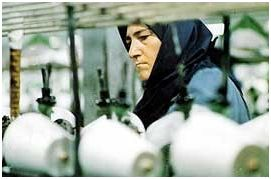

پذيرش > سایت نوشته ها > کاهش ساعت کاری زنان شاغل؛ به نفع زنان یا مصلحت دولت؟ /مژگان مدرس علوم


 کاهش ساعت کاری زنان شاغل؛ به نفع زنان یا مصلحت دولت؟ /مژگان مدرس علوم کاهش ساعت کاری زنان شاغل؛ به نفع زنان یا مصلحت دولت؟ /مژگان مدرس علوم
1 اردیبهشت 1389 - - نسخه قابل چاپ
مسئله کاهش ساعات کار زنان شاغل از جمله مسائلی است که به شکل های مختلف و در مقاطع زمانی خاصی از سوی دولت مورد بحث و بررسی قرار گرفته و مصوباتی در این رابطه به تصویب رسیده است.
در حالی که زنان متاثر از شرایط اقتصادی برای تامین معاش ناچار به کار در عرصه های مختلف هستند اما نگرش های متفاوتی نسبت به وضعیت شغلی زنان در سطوح مختلف اجتماعی وعمومی وجود دارد که هریک بیانکننده دغدغه هایی از سوی کارشناسان و مسئولین دولتی می باشد.
انور صمديراد آسيبشناس اجتماعي معتقد است که كاهش ساعت كاري زنان فينفسه بد نيست اما بايد "افكار عمومي" نسبت به اين موضوع حساس شود و نظرات مخالف و موافق در رابطه با كاهش ساعت كاري زنان در جامعه مطرح شود و سپس بر اساس "خردجمعي" نسبت به اين موضوع تصميمگيري شود.
این آسيبشناس اجتماعي در ادامه به نقاط ضعف مجلس در خصوص تصویب یا رد قوانین در مدت زمان کوتاه اشاره کرد و گفت: "اگر كاهش ساعت كاري زنان قرار باشد در مجلس تصويب شود، ابتدا بايد فرهنگسازي لازم در جامعه صورت گيرد تا در صورت بروز اين تغيير، آسيبي به قشر زنان وارد نشود. بايد كار كارشناسي در اين مورد به كارشناسان و دانشگاهيان سپرده شود."
کاهش بهره وری و کارایی کشور
براساس آمار اعلام شده توسط سازمان سابق مدیریت و برنامه ریزی، بدون احتساب شاغلان زن آموزش و پرورش و با توجه به تعداد کارمندان زن، کاهش ساعت کار زنان به میزان مورد نظر یعنی ۳۶ ساعت در هفته، باعث کاهش حضور زنان به میزان یک میلیون و ۹۶۰ هزار نفر میشود که کشور را با کاهش بهره وری و کارایی مواجه میکند، بنابراین برای جبران خدمات ساعات کاهش یافته دولت ملزم به استخدام افراد جدید میشود.
زهره طبيب زاده نوري مشاور احمدی نژاد با تاکید بر این که اجرايي كردن اين طرح براي دولت بار "مالي" به همراه خواهد داشت، اظهار داشت: "از آنجايي كه در وزارتخانههاي بهداشت ، درمان و آموزش پزشكي ، آموزش و پرورش و علوم ، تعداد زيادي از كارمندان را زنان تشكيل ميدهند و عدم حضور زنان در برخي از ساعات روز براي ارباب رجوع مشكل ايجاد خواهد كرد، عملي كردن اين طرح در دست بررسي است.همچنین برخي از ادارات معتقد بودند تقليل يافتن ساعات حضور زنان در ادارات منجر بهبينظمي و ايجاد بار مالي و ناهماهنگي در اموري همچون سرويس اياب و ذهاب خواهد شد و بنا به همين دلايل نيز اين لايحه دوبار توسط سازمان مديريت و برنامهريزي رد شد."
در خصوص همین اشکالات ایجاد شده در ابعاد گسترده، مريم مجتهدزاده رئيس مركز امور زنان و خانواده رياست جمهوري روز گذشته خبر از افزودن پیشنهاد تکمیلی به این لایحه را داده و گفت: " بر اساس اين لايحه زنان از "همه" مزايا بهرهمند مي شوند. اما اين لايحه در عمل با مشكلاتي مواجه شد زيرا زنان معمولا با سرويس رفتوآمد ميكنند و مشكل مهدكودك و رفتوآمد آنها باعث شد كه عملي شدن اين لايحه امكانپذير نباشد لذا پيشنهاد تكميلي در رابطه با اين لايحه مطرح شده است."
زمین گیر شدن توسعه کشور
این در حالی است که بسیاری از کارشناسان اجرایی کردن این طرح را حساس و حتی خطرناک در راستای مشارکت اجتماعی زنان می دانند. كمال اطهاري پژوهشگر اقتصاد توسعه با بیان این موضوع که اصرار مجلس بر كاهش ساعت كاري زنان، جهتگيري اشتباه و مصداق دوستي خالهخرسه است، مي گويد: "كم شدن ساعت كاري زنان باعث ميشود كه ديگر كارفرمايان زنان را استخدام نكنند. و بدین ترتیب اگر زنان از عرصه اجتماع خارج شوند حركت توسعهاي ايران نه تنها به تعويق ميافتد بلكه "زمينگير" نيز ميشود".
اطهاري در ادامه با یادآوری این مطلب که مغز جامعه مركب از زنان و مردان جامعه است و اگر زنان از صحنه اجتماع كنار زده شوند مانند اين است كه جامعه فقط از نصف مغز و ظرفيت خود استفاده كند، خاطر نشان کرد: "مجلس نبايد نگاه قشري داشته باشد و زنان را از صحنه اجتماع حذف كند. خروج زنان از عرصه اجتماع و محيطهاي كاري ميزان فقر را در جامعه افزايش ميدهد. بهتر است دولت به جاي كاهش ساعت كاري زنان ،ميزان مرخصيهاي زنان و ميزان مشاركت اين قشر در جامعه را افزايش دهد تا شاهد "ارتقاي" خانواده و اقتصاد كشور باشيم."
کارشناسان بر این باورند که در کشوری که میزان اشتغال زنان در آن در خوشبینانه ترین حالت به 14درصد می رسد در حالی که 64درصد راه یافتگان به دانشگاه زن هستند، طرح کاهش اجباری ساعات کاری زنان باعث حذف بیشتر زنان از محیط های کاری می شود.
جبارعلي سليميان نماينده اسبق كارگران در سازمان بينالمللي كار معتقد است تصویب كاهش ساعات كاري زنان باعث مي شود كه كارفرمايان از استخدام زنان سرباز بزنند چون از نظر اقتصادي استخدام زنان مقرون به صرفه نيست.
به گفته وی، بر اساس مقاولهنامه بينالمللي شماره 111 مربوط به تبعيض در امور استخدام و اشتغال، هر گونه تفاوت و محروميت يا تقدم كه بر پايه نژاد، رنگ پوست، "جنسيت"، مذهب، عقيده سياسي و يا سابقه مليت آباء و اجداد يا طبقه اجتماعي برقرار بوده و در امور مربوطه به استخدام و اشتغال احتمال موفقيت و رعايت مساوات در شرايط سلوك با كارگر را به كلي از ميان برده و يا بدان لطمه وارد سازد ممنوع است، بنابراين كاهش ساعت اداري زنان كه منجر به نوعي تبعيض ميشود از نظر سازمان بين المللي كار مورد ايراد است.
عدم تعهد دولت برای تامین شغلی زنان
بر اساس باورهای سنتی در ایران مرد نانآورخانواده محسوب شده و دولت موظف به تامین شغل برای زنان نیست. بنابراین، این نوع طرحها کمک میکنند تا فرصتهای شغلی زنان در اختیارمردان قرارگیرند و زنان از عرصه های عمومی کنار گذاشته شوند.
زينب طاهري عضو هيات مديره اتحاديه كاركنان بيمارستانها و مراكز درماني معتقد است که در حال حاضر بسياري از زنان كشور ما تنها نانآور خانوادههاي خود هستند و در صورت تصويب طرح کاهش ساعت کاری زنان شاغل، كارفرمايان از استخدام زنان استقبال نميكنند و مديريتهاي كليدي به زنان سپرده نشود يا حقوق و دستمزد كمتري را براي آنها در نظر ميگيرند بنابراين ميتوان گفت كاهش ساعت كاري زنان ميتواند به "افزايش" آسيبهاي اجتماعي دامن بزند.
شواهد موجود نشان می دهد اگرچه زنان با توجه به پشتکار و توانایی های خود توانسته اند به تحصیلات و پیشرفتهای شغلی مناسبی برابر با مردان برسند، اما هنوز تبعیض جنسیتی در اشتغال و دستمزد ابعاد گسترده ای دارد.
منيره نوبخت، رئيس شوراي فرهنگي ـ اجتماعي زنان می گوید: " كاهش ساعات اداري زنان و دادن امتيازات "ويژه" به آنها در محيط كار باعث بيرون رانده شدن زنان از اجتماع نيست. چنين امتيازاتي به خاطر تفاوت ميان زن و مرد و مسئوليتهايي است كه زنان بر عهده دارند و اين پيشنهاد "عين" عدالت است. و این عدالت حكم ميكند به تفاوتهاي ميان زن و مرد در محيطهاي كار توجه شود." این در حالی است که هنوز زنان حتی در شرایط مساوی کاری با مردان، بازهم مزد کمتری دریافت میکنند.
بر طبق آمار، 79% کل جمعیت زنان ایرانی باسواد هستند. اما با این وجود جمعیت فعال زنان ایرانی، 21% است. که در مقایسه با 85/79% جمعیت فعال مردان رقم پایینی است. سهم درآمد زنان بر اساس این آمار 11% و سهم درآمدی مردان 89% است. آمار مدیریت زنان در ایران 13% برآورده شده در حالی که سهم مدیریت مردان 87% گزارش شده است.
نگاه به مسائل زنان همراه با غرض ورزی های سیاسی
در این خصوص خانم میرزایی کارمند دولت با تاکید بر اینکه ارائه اینگونه طرح ها گامی در جهت تضییع بیشتر حقوق زنان محسوب می شود، به جرس می گوید: " به اعتقاد من، نه تنها کم کردن ساعت کاری به نفع زنان شاغل و کمک به حفظ حقوق آنان در جامعه و خانواده نیست بلکه موانعی برای رشد و پیشرفت آنها در سطوح مختلف ایجاد خواهد کرد بطوری که می تواند تهدیدی برای موقعیت و فرصت شغلی آنها قلمداد شود. دستمزد نابرابر، تبعیض جنسیتی در محیط کار، عدم رعایت عدالت اداری، عدم توجه به شایستگی ها و توانایی ها در ارتقاء شغلی همه و همه از جمله مواردی است که زنان باید در محیط کار با آن دست و پنجه نرم کنند. متاسفانه نگاه به مسائل زنان در کشور با غرض ورزی های سیاسی گره خورده است. در اوایل انقلاب با وجود نگاههای سنتی به زنان در آن زمان به حضور آنان در عرصه عمومی و سیاسی و بویژه در تظاهرات ها تاکید می شد. اما امروزه که حضور زنان در عرصه اجتماعی و عمومی به نفع منافع حکومت تعریف نمی شود با ارائه لایحه و طرح ها تلاش در کمرنگ کردن نقش فعال و و ایجاد محدودیت برای زنان در سطوح مختلف می شود.
زنان بواسطه پشتکار و بالا رفتن سطح آگاهی اشان نسبت به مسائل خود در عرصه های مختلف، خواهان مشارکت برابر در جامعه هستند. باید توجه داشت بیش از پنجاه درصد دانشجویان را دختران تشکیل می دهد و افزایش آگاهی های علمی این قشر باعث می شود طی دو دهه آینده ایران نسبت به کشورهای توسعه یافته نقش و جایگاه قابل ملاحظه ای از حیث مشارکت و فعالیت زنان در عرصه های مختلف کشور خواهد یافت. این در حالی است که متاسفانه به دلیل دیدگاه جناحی دست اندرکاران، زنان شاغل نیمی از زمان خود را باید صرف رفع تبعیضهای قانونی، عملی و نابرابری های جنسیتی بکنند."
بی هویتی زنان شاغل!
باورهاي غلط و نگاههای سنتی به وظایف زنان از جمله مسائلی است که ارتقای زنان را در سطح مدیریتی جامعه با مانع مواجه کرده است. به عقيده مدافعان طرح کاهش ساعت کاری زنان شاغل، زنان با ورود به مشاغل مردانه تبديل به موجودات بي هويتي شده اند كه نه از روح لطيف و پرعطوفت زنانه آنها اثري باقي مانده و نه از درياي بي كران محبت مادرانه شان و اين معضل حاصل بي توجهي نهضت هاي فمينيستي به نقش زن به عنوان همسر و مادر است كه زنان را گرفتار منجلاب توهم آزادي و برابري با مردان كرده است.
این در حالی است که دكتر سايه بيگدلي با اشاره به نقش زنان در عرصه های اجتماعی می گوید: "نوع تصور جامعه از نقش زنان و تغييرات آن در طول زمان از مهمترين متغيرهايي است كه مسير و شتاب تحولات اجتماعي را بيان ميكند. زنان يكي از سرمايههاي پرارزش در كشورهاي جهان بهويژه در كشورهاي در حال توسعه هستند. رسيدن به اهداف سازمانها و بهدنبال آن رشد و توسعه هر چه بيشتر جوامع در زمينههاي گوناگون مستلزم حضور بهتر و بيشتر زنان و مردان متخصص در عرصه عمل است، اين در حالي است كه زنان در محيط كار خود با مسائلي نظير تبعيض شغلي روبهرو هستند."
در همین راستا هادي غنيميفرد، رئيس شبكه سراسري خانههاي صنعت و معدن با تاکید بر اینکه كم كردن ساعت كاري زنان "زمينهساز" تبعيض جنسيتي بيشتر در كشور است، می گوید: "اگر اختلافي بين زنان و مردان در قانون كار به وجود بيايد، اين اختلاف در سطوح مختلف جامعه تسري پيدا ميكند. ابتدا ساعات كاري زنان را كاهش ميدهند، سپس ميگويند توانايي زنان از مردان كمتر است، پس مردان چون بيشتر كار ميكنند بايد حقوق بالاتري دريافت كنند، بعد از آن هم حتما ميگويند هر مردي بهتر است 4 زن داشته باشد و به اين ترتيب روز به روز شاهد تبعيضهاي جنسيتي بيشتري در جامعه هستيم."
فعالان حقوق زنان مقصرند
در نگرشی منفی به دیدگاههای علمی و کارشناسانه، عباس نبوي، مدير موسسه تمدن و توسعه اسلامي می گوید: "نوعي روشنفكر مابي غلط و نادرست ترويج شده كه البته مسبب اصلي آن فعالان حقوق زنان هستند و آن ترويج روحيه تساوي شغلي زنان و مردان در اجتماع است. اما هيچ وظيفه اي براي زنان بالاتر از خانه داري و همسرداري نيست "
به گفته لاله افتخاري نماينده مجلس، برخي كشورها با ارايه آمار بالاي اشتغال زنان كه البته آن را با افتخار مطرح مي كنند قصد دارند زنان كشورشان را آزاد و برابر با مردان توصيف كنند در حالي كه ما برايشان مطرح مي كنيم تعالي جايگاه زنان به استخدام آنها در مشاغل "نازل" رفتگري و كارگر ساختماني و يا باربري و حمل ماشين هاي سنگين نيست و ارزش هاي نظام جمهوري اسلامي ايران اين وضعيت را متناسب با جايگاه زنان نمي داند. زنان ايراني در مقايسه با تمامي كشورهاي دنيا از وضعيت بهتر و حقوق بالاتري برخوردارند که اين آزادي چه در حريم خصوصي، آزادي انديشه و حتي انتخاب شغل ديده مي شود.
حذف زنان با "شعار" مهرورزی و عدالت گستری
مدافعان برابری حقوق زنان بر این باورند که برخورد با فعالان حقوق زنان که از کلیه شیوه های مسالمت آمیز برای پیگیری خواسته های خود در زمینه برابری خواهی و رفع تبعیض های حقوقی و اجتماعی از زنان در حوزه های مختلف استفاده می کردند در دستور کار دولت احمدی نژاد قرار گرفته است اما برغم تمام تلاشهای احمدی نژاد برای به حاشیه راندن زنان، دور کردن آنان از فضاهای عمومی و اجتماعی و خانه نشین کردن آنان، موج برابری خواهی و رفع تبعیض های حقوقی و اجتماعی از زنان آن چنان ابعاد گسترده ای به خود گرفته است که دولت ناچار به ارائه طرح هایی با پشتوانه غیرکارشناسانه شده است.
یکی از مدافعان حقوق زن در این رابطه به جرس می گوید: "از لحاظ آمار، زنان نيمي از جمعيت جامعۀ بشري را تشكيل مي دهند و جامعۀ بشري جامعه اي است مركب از زنان همراه با مردان و هيچيك از اين دو امتيازي بر ديگري ندارد. اما متأسفانه در بيشتر موارد واقعيت تبعيض و نابرابري ريشه در انديشه هاي توجيه كننده و ترويج دهندۀ نابرابري داشته است و بر همین اساس زنان فاقد تماميت ماهيت انساني تلقي شده و بنابر اين از حقوق كامل انساني خود محروم گشته اند. این در حالی است که ایران دارای درصد بالایی از زنان تحصیلکرده است و زنان به طور فعال در تمام عرصه های اجتماعی حضور دارند هر چند تمام تلاش ها به طور سیستماتیک بر آن است که این قشر تاثیرگذار جامعه به حاشیه رانده شوند. بر اساس همین نوع نگاه به حضور زنان در جامعه است که باعث شده از توانایی آنها در پیشبرد اهداف ملی استفاده نشود و میزان حضور این قشر توانمند در رده های مدیریتی خرد و کلان کمرنگ شده و از نظر سلسله مراتب شغلی در سطوح پایین تری از مردان قرار گیرند. بر همین اساس قانونگذاران و برنامه ریزان کنونی کشور تمام تلاش خود را بر محور شعار "مهرورزی" و "عدالت گستری" دولت احمدی نژاد گذاشته اند تا از حضور فعال زنان در عرصه های اجتماعی جلوگیری بعمل آورند. در حقیقت شعار "عدالت گستری" دولت رویه ای برای جلوگیری از ورود زنان به پست های کلیدی و حساس با توجه به توانمندی ها و تخصص های آنان شده است."
قابل ذکر است بر اساس قانون مدنی، مرد نانآور خانواده شمرده میشود و دولت موظف به "تامين" شغل برای زنان نيست
جرس
ارسال به
بالاترین
،
توییتر
،
فریندفید
،
فیسبوک
در همين بخش :
 یک خبر تلخ؟ یک قانونشکنی؟ یک تصمیم بخشنامهای جدید؟ یک خبر تلخ؟ یک قانونشکنی؟ یک تصمیم بخشنامهای جدید؟
چرا بایست به سکسوالیته پرداخت؟ / نفیسه آزاد
آزارجنسی خانگی؛ «قربانی» نه، «نجات یافته»
زنان، بزرگترین بازندگان بهار عرب
سانسور از دیدگاه جنسیتی/الهه امانی
ديگر بخش ها :
طرح یک میلیون امضا
|
مقالات
|
سایت نوشته ها
|
اخبار
|
گزارش كمپين
|
گفت و گو
|
علیه سکوت
|
كوچه به كوچه
|
نامه های شما
|
گزارش ویژه
|
گفتگو با اعضا
|
ویژه سالگرد کمپین
|
تصویر برابری
|
دل آرام علی
|
تریبون
|
مقالات
|
تاریخ شفاهی
|
خارج از چارچوب
|
کتابخانه
|
درباره کمپین
|
کمپین در شهرها
|
کمپین در بند
|
صدای تغییر
|
ویژه 22 خرداد
|
لایحه حمایت از خانواده
|
گالری
|
عشا مومنی
|
امیر یعقوبعلی
|
خدیجه مقدم
|
راحله عسگری زاده و نسیم خسروی
|
پروین اردلان،جلوه جواهری، مریم حسین خواه، ناهید کشاورز
|
زینب پیغمبرزاده
|
سعیده امین، سارا ایمانیان، محبوبه حسین زاده، ناهید کشاورز و همایون نامی
|
احترام شادفر
|
نسیم سرابندی زاده،فاطمه دهدشتی
|
وبلاگ مهمان
|
پرونده خرم آباد
|
دستگیری ها
|
مریم مالک
|
پرستو اللهیاری
|
مهرنوش اعتمادی
|
سمیه رشیدی
|
Other Languages
|
همراهان
|
«فراخوان کمپین ده روز با بهاره هدایت»
| English
|